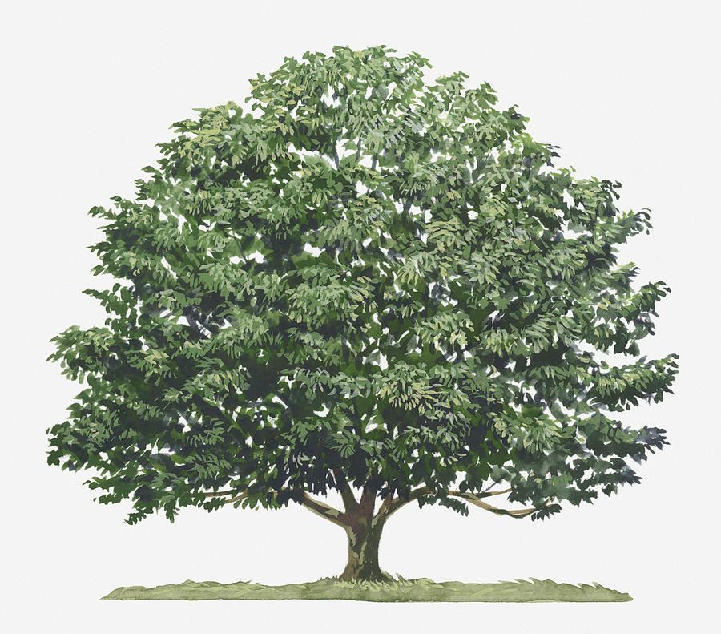
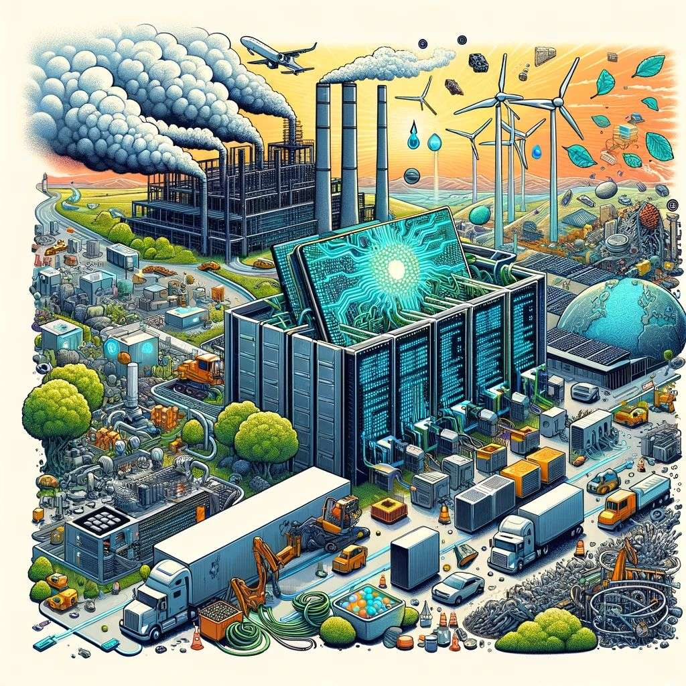
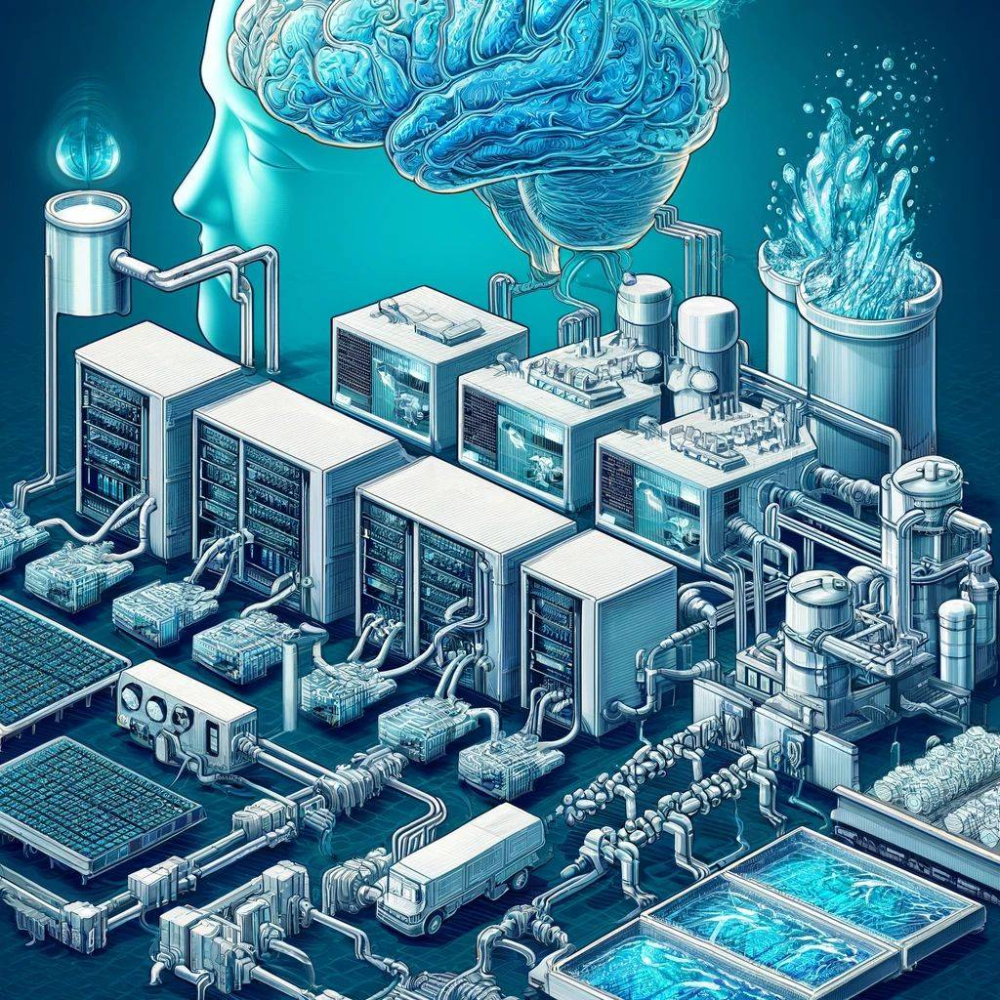
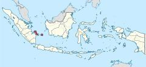
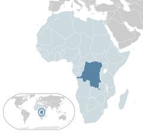
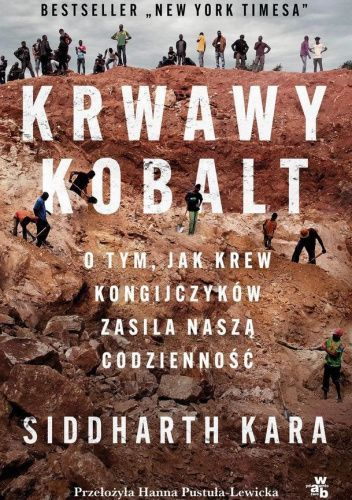
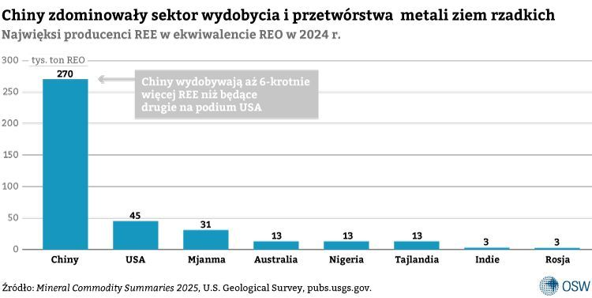
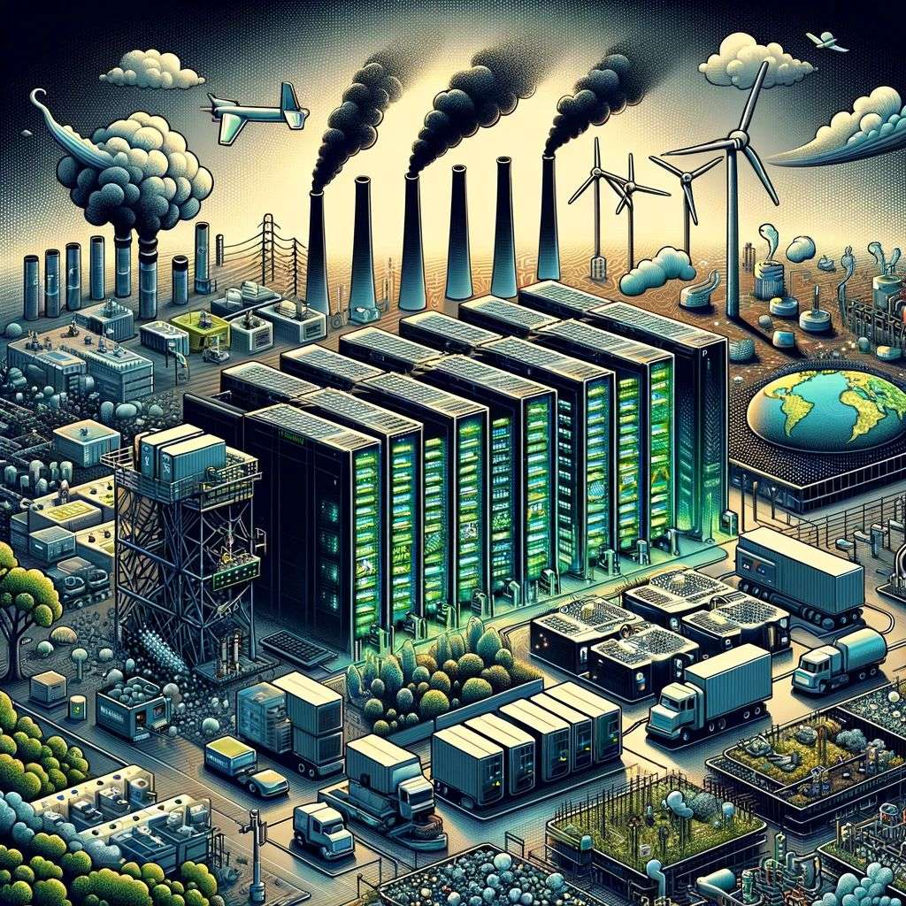
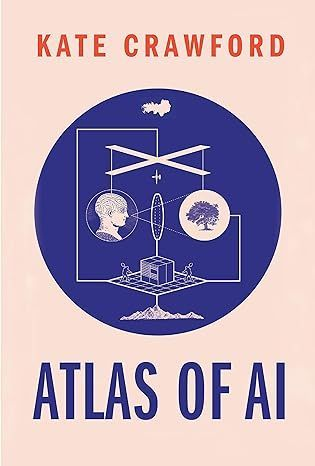

← Strona dzielnicy · Pokaz slajdów
Slajdy do czytania · dzielnica 10
AI a zrównoważony rozwój. Podsumowanie wykładu
Treść slajdów w układzie wygodnym na telefonie. Szersze omówienie jest w treści zajęć na stronie dzielnicy.
Plan spotkania
- Ślad energetyczny i wodny AI. Centra danych a system energetyczny
- Surowce i łańcuchy dostaw: kobalt, cyna, lit. Historyczny precedens gutaperki
- „Logika ekstrakcji” (K. Crawford) i nierówności globalne
- AI na rzecz klimatu. Regulacje dotyczące raportowania wpływu środowiskowego
- Podsumowanie wykładu i przygotowanie do zaliczenia
Część I. Zapomniany koszt postępu
Środowisko. Zapomniany koszt technologicznego postępu

- Każda technologia informacyjna ma swoje ciało: kable, chipy, serwery, elektrownie
- Zaczniemy od XIX-wiecznego internetu: telegrafu
Gutaperka i pierwszy kabel transatlantycki
- Gutaperka: lateks z drzewa Palaquium gutta (Malaje, Singapur), izolacja kabli podmorskich
- Kabel transatlantycki z 1857 r.: ok. 1800 mil (ok. 2900 km), 2000 ton, ok. 250 ton gutaperki
- Z jednego dorosłego drzewa: ok. 300 g lateksu
- Na jeden kabel potrzeba było więc setek tysięcy drzew
Palaquium gutta: wiktoriańska katastrofa ekologiczna
Rycina botaniczna, XIX w. [źródło do weryfikacji, prawdopodobnie domena publiczna]
- Lasy Malezji i Singapuru zostały splądrowane
- W 1883 r. Brytyjczycy zakazali pozyskiwania lateksu, ale gatunek był już niemal wymarły
- Związek technologii z materiałami, środowiskiem i warunkami pracy
- Dziś w tej roli: górnictwo i globalne łańcuchy dostaw
Od hardware’u do software’u

- „Chmura” to metafora: w rzeczywistości to hale z serwerami, chłodzenie i linie energetyczne
- Koszt obejmuje wydobycie surowców, produkcję chipów, trenowanie i każde użycie modelu
Część II. Energia
Centra danych a system energetyczny

Gdzie rośnie popyt?
- 2024: USA 45%, Chiny 25%, Europa 15% zużycia centrów danych
- Do 2030 r. USA i Chiny odpowiadają za ok. 80% wzrostu
- W USA centra danych to prawie połowa wzrostu popytu na energię do 2030 r.
- Na mieszkańca: USA ok. 540 kWh rocznie, Afryka poniżej 1 kWh
- Wąskie gardła (IEA 2026): przyłącza do sieci, turbiny gazowe, transformatory, sprzeciw lokalnych społeczności
Źródło: IEA, Energy and AI (2025); Key Questions on Energy and AI (2026)
Kto napędza wzrost zużycia energii przez centra danych?

Irlandia: centra danych zużywają już 23% prądu

Ile energii zużywa jedno zapytanie?
- Google (08.2025): mediana zapytania tekstowego do Gemini: 0,24 Wh, 0,03 g CO₂e
- Epoch AI (02.2025): typowe zapytanie do GPT-4o ok. 0,3 Wh (wcześniejsze szacunki: ok. 3 Wh)
- S. Altman (06.2025): średnio 0,34 Wh na zapytanie, bez podanej metodologii
- Jedno zapytanie to mało. Problem to skala: miliardy zapytań dziennie, coraz dłuższe odpowiedzi „rozumujących” modeli i trenowanie
- Policz w kalkulatorze śladu
Energia na zapytanie: cztery szacunki

Energia: Sam Altman w Davos
- Styczeń 2024: AI będzie zużywać coraz więcej energii
- „Nie da się tam dojść bez przełomu”: potrzebna fuzja jądrowa albo znacznie tańsza energia słoneczna z magazynowaniem
- OpenAI szacowało, że od 2012 r. moc obliczeniowa do trenowania największych modeli rosła wykładniczo
Meta, Microsoft i energia jądrowa
M. Zuckerberg w podcaście D. Patela, 18.04.2024 (kadr z nagrania)
- Zuckerberg (2024): nowe centra danych mają 50–150 MW; centrum 1 GW to „elektrownia jądrowa” tylko do trenowania
- Microsoft: ponowne uruchomienie bloku Three Mile Island (835 MW, umowa na 20 lat, 09.2024)
- Google–Kairos Power: małe reaktory, 500 MW do 2035 r.
- Amazon–X-energy, Meta–elektrownia Clinton (1121 MW, od 2027 r.)
Emisje rosną mimo obietnic
- Microsoft (raport 2025): emisje +23,4% względem 2020 r., choć celem jest „ujemny węglowo” do 2030 r.
- Google (raport 2025): emisje +51% względem 2019 r.; zużycie wody +28% w ciągu roku
- Google (raport 2026): emisje +18% w ciągu roku i ok. +81% wobec 2019 r.
- Microsoft (raport 2026, rok obrotowy 2025): emisje ok. +57% wobec 2020 r.
- Główny powód: budowa infrastruktury dla AI
Emisje Microsoftu i Google w liczbach

Paradoks Jevonsa
- W. S. Jevons (1865): sprawniejsze maszyny parowe zwiększyły, a nie zmniejszyły zużycie węgla
- DeepSeek (styczeń 2025): tańszy i sprawniejszy model, a zarazem obawa o „koniec popytu” na chipy
- S. Nadella (27.01.2025): „Paradoks Jevonsa znów uderza!”
- Wniosek: większa efektywność jednego zapytania nie gwarantuje mniejszego zużycia łącznie
Część III. Woda
Ile wody „wypija” rozmowa z czatem?
- Li i in. (2025): pół litra wody na ok. 10–50 średniej długości odpowiedzi
- Zależy od tego, kiedy i gdzie działa centrum danych
- Wcześniejsze wersje pracy podawały „20–50 pytań”
- Liczy się woda do chłodzenia i woda w elektrowniach
Ślad wodny: chłodzenie i produkcja chipów

- Chłodzenie centrów danych: ciepło z serwerów odprowadza się często przez odparowanie wody
- Produkcja półprzewodników: ultraczysta woda do czyszczenia i obróbki płytek krzemowych
- Elektrownie: woda zużywana pośrednio przy wytwarzaniu energii
Szacunki różnią się ponad stukrotnie

Woda: skala i prognozy
- Trenowanie GPT-3 w centrach danych Microsoftu w USA: ok. 5,4 mln litrów wody, w tym ok. 700 tys. litrów bezpośrednio w centrum danych
- Prognoza na 2027 r.: AI może odpowiadać za pobór 4,2–6,6 mld m³ wody rocznie
- To więcej niż roczny pobór wody w 4–6 krajach wielkości Danii albo połowa poboru Wielkiej Brytanii
- Microsoft: zużycie wody +34% w 2022 r. (ok. 6,4 mln m³)
Źródło: Li i in., „Communications of the ACM” 68 (2025), nr 7; Microsoft za AP (2023)
Konflikty o wodę
- Urugwaj (2023): Google planował centrum danych zużywające do 7,6 mln litrów wody pitnej dziennie, w czasie najgorszej suszy od 74 lat; projekt zmieniono na chłodzenie powietrzem
- Aragonia (Hiszpania): planowane centra danych Amazona z pozwoleniami na ok. 756 tys. m³ wody rocznie; ruch „Tu Nube Seca Mi Río” („Twoja chmura wysusza moją rzekę”)
- Querétaro (Meksyk): susza i ograniczenia dostaw wody obok inwestycji w centra danych
Część IV. Surowce i łańcuchy dostaw
Lit. „Białe złoto” XXI wieku?
[źródło zdjęcia do weryfikacji, prawdopodobnie Wikimedia Commons]
- Baterie litowo-jonowe: od smartfonów po magazyny energii dla centrów danych
- Portugalia: kopalnia Barroso (strategiczny projekt UE)
- 7.11.2023: premier António Costa podaje się do dymisji w związku ze śledztwem w sprawie koncesji na lit, wodoru i centrum danych w Sines
- Od 1.12.2024 r. Costa jest przewodniczącym Rady Europejskiej
Cyna z wysp Bangka i Belitung

Zdjęcie: [źródło do ustalenia]
- Indonezja to drugi producent cyny na świecie (2025: 61 tys. t z 290 tys. t), po Chinach
- Bangka i Belitung: ok. 90% indonezyjskiej cyny
- Cyna to m.in. luty w każdym urządzeniu elektronicznym
- Afera PT Timah: szkody szacowane na 300 bln rupii; wyrok 20 lat dla H. Moeisa (2025)
Od „krwawych diamentów” do „krwawych minerałów”


S. Kara, Krwawy kobalt, W.A.B. 2024
- DR Konga: ok. 74% światowego wydobycia kobaltu (2025, USGS)
- Kopalnie rzemieślnicze, praca dzieci, warunki bliskie niewolnictwu
- Wojna na wschodzie kraju: M23 zajmuje Gomę (styczeń 2025); koltan i cyna finansują konflikt
- 2025: zakaz eksportu kobaltu, potem kwoty eksportowe
Metale ziem rzadkich

Źródło: OSW na podstawie USGS, Mineral Commodity Summaries 2025 (dane za 2024 r.)
- Chiny wydobywają ok. 70% metali ziem rzadkich i dominują w ich przetwórstwie
- 2025: chińskie ograniczenia eksportu (kwiecień, październik); część zawieszono na rok w listopadzie
Kilka państw kontroluje surowce dla AI i baterii

Koszty środowiskowe

- Nierówny podział kosztów: „globalne Południe” często staje się przedmiotem eksploatacji
- Wydobycie odbywa się tak, by prawdziwe koszty nie były widoczne
- Łańcuch dostaw jest tak rozległy, że trudno go prześledzić „od nitki do kłębka”
- Greenwashing wielkich firm technologicznych
Część V. Logika ekstrakcji
Kate Crawford: logika ekstrakcji

K. Crawford, Atlas of AI, Yale UP 2021
- AI to nie tylko algorytmy, ale przemysł wydobywczy
- Współczesne technologie eksploatują zasoby naturalne, ludzką pracę i dane na ogromną skalę
- Koszty etyczne i społeczne zostają poza rachunkiem
- Wyd. pol.: Atlas sztucznej inteligencji. Władza, pieniądze i środowisko naturalne, przeł. T. Chawziuk, Wyd. UJ (bo.wiem), 2024
Trzy ekstrakcje
| Zasób | Przykład | Spotkanie |
|---|---|---|
| ziemia | lit, kobalt, cyna, woda, energia | 10 |
| praca | oznaczanie danych, moderatorzy treści, górnicy | 4, 5 |
| dane | teksty, obrazy, głosy użytkowników i twórców | 7, 8 |
- Te same łańcuchy dostaw łączą środowisko, prawo pracy, ochronę danych i prawo autorskie
Nierówności globalne
- Korzyści z AI trafiają głównie do państw i firm z Północy, koszty środowiskowe częściej do Południa
- Zużycie energii przez centra danych na mieszkańca: USA ok. 540 kWh, Afryka poniżej 1 kWh
- „Maksymalizm obliczeniowy” przykrywa koszt środowiskowy
- Pytanie: czy prawo UE może skutecznie regulować łańcuchy dostaw poza UE?
Część VI. AI dla klimatu i prawo
AI na rzecz klimatu i środowiska
- DeepMind (2016): do 40% mniej energii na chłodzenie centrów danych Google
- Google, American Airlines (2023): 54% mniej smug kondensacyjnych w lotach testowych
- GraphCast (2023): 10-dniowa prognoza pogody w niecałą minutę, lepsza od referencyjnej w 90% miar
- Flood Hub (2024): prognozy powodzi w ponad 80 krajach
- Pytanie: czy korzyści równoważą koszty? Kto to liczy?
Raportowanie: centra danych w UE
- Dyrektywa (UE) 2023/1791 o efektywności energetycznej, art. 12 i zał. VII: centra danych od 500 kW raportują zużycie energii i wody
- Rozporządzenie delegowane (UE) 2024/1364: system oceny centrów danych; raporty do 15 maja każdego roku
- Wrzesień 2026: projekt Komisji wprowadzający etykiety A–G (efektywność energetyczna i wodna), od 2027 r.
- Projekt aktu o rozwoju chmury i AI (Cloud and AI Development Act, COM(2026) 502): więcej centrów danych w UE, z kryteriami zrównoważenia
AI Act a środowisko
- Zał. XI pkt 2 lit. e: dokumentacja modelu GPAI obejmuje znane lub szacowane zużycie energii modelu (art. 53 ust. 1 lit. a)
- Art. 40 ust. 2: normy zharmonizowane mają dotyczyć także efektywności zasobowej i energetycznej
- Art. 95 ust. 2 lit. b: dobrowolne kodeksy postępowania mogą obejmować zrównoważenie środowiskowe
- Art. 112 ust. 6: przegląd postępów w normalizacji energooszczędnych modeli GPAI do 2.08.2028 r.
- Ocena: obowiązki środowiskowe są miękkie i dotyczą głównie dokumentacji
Łańcuchy dostaw: prawo UE i USA
- Rozporządzenie (UE) 2017/821 o minerałach z regionów konfliktów: cyna, tantal, wolfram, złoto (od 1.01.2021); kobaltu nie obejmuje
- Rozporządzenie (UE) 2023/1542 o bateriach: należyta staranność dla kobaltu, litu, niklu i grafitu, przesunięta na 18.08.2027 (rozp. 2025/1561)
- Akt w sprawie surowców krytycznych (rozp. (UE) 2024/1252): cele dla wydobycia, przetwarzania i recyklingu w UE do 2030 r.
- Omnibus I (dyrektywa (UE) 2026/470): węższy zakres CSRD i CSDDD
- USA: Dodd-Frank Act, sekcja 1502 (2010) o minerałach z regionów konfliktów
Część VII. Podsumowanie wykładu
Co dalej…?
Dziesięć spotkań w pigułce (1–5)
| Spotkanie | Najważniejsza teza |
|---|---|
| 1. Czym jest AI? | prawo definiuje AI przez wnioskowanie (art. 3 pkt 1 AI Act) |
| 2. Historia | postęp falami: złote lata, zimy AI, przełomy (2012, 2017, 2022) |
| 3. Jak działa AI? | model przewiduje kolejny token; halucynacje wynikają z samej zasady działania |
| 4. Praca i edukacja | „poszarpana granica”: AI pomaga w jednych zadaniach, szkodzi w innych |
| 5. Etyka | stronniczość, przejrzystość, art. 22 RODO, SCHUFA, moderacja treści |
Dziesięć spotkań w pigułce (6–10)
| Spotkanie | Najważniejsza teza |
|---|---|
| 6. Kultura | regulacja to wybór kulturowy: ryzyko (UE) a rozwój (Korea, Japonia) |
| 7. Prawo I | AI Act, omnibus cyfrowy, ustawa o systemach AI, spory o prawa autorskie |
| 8. Prawo II | dane osobowe, odpowiedzialność, AI w sądach i zawodach prawniczych |
| 9. Przyszłość | prognozy są niepewne; wdrożenia udają się przy nadzorze i weryfikacji |
| 10. Środowisko | AI ma ciało: energię, wodę i surowce |
Trzy wnioski z całego kursu
- AI to technologia materialna i społeczna, nie tylko matematyczna: ma koszty, właścicieli i ofiary
- Prawo reguluje zastosowania i skutki, nie „inteligencję”: ryzyko, przejrzystość, odpowiedzialność
- Prawnik odpowiada za wynik, także gdy pomagała mu AI: weryfikuj, ujawniaj, chroń dane
Najważniejsze akty prawne
- Rozporządzenie (UE) 2024/1689 (AI Act) i rozporządzenie (UE) 2026/1744 (omnibus cyfrowy)
- Ustawa z 3.07.2026 r. o systemach sztucznej inteligencji (Dz.U. 2026 poz. 1003), organ nadzoru: KRiBSI
- RODO (zwłaszcza art. 5, 6, 22, 35), DSA, DMA
- Dyrektywa (UE) 2019/790 (TDM, art. 3 i 4) i ustawa o prawie autorskim
- Dyrektywa (UE) 2024/2853 o produktach wadliwych (transpozycja do 9.12.2026)
- Konwencja ramowa Rady Europy o AI (CETS nr 225)
Kluczowe terminy AI Act
| Od | Co |
|---|---|
| 2.02.2025 | zakazy (art. 5), kompetencje w zakresie AI (art. 4) |
| 2.08.2025 | obowiązki dostawców modeli GPAI |
| 2.08.2026 | przejrzystość (art. 50); dla systemów z art. 50 ust. 2 sprzed tej daty: do 2.12.2026 |
| 2.12.2026 | nowe zakazy z art. 5 (m.in. materiały intymne bez zgody, CSAM) |
| 2.12.2027 | systemy wysokiego ryzyka z zał. III |
| 2.08.2028 | systemy wysokiego ryzyka z zał. I |
Najważniejsze orzeczenia
- TSUE: C-634/21 SCHUFA (7.12.2023), C-203/22 Dun & Bradstreet Austria (27.02.2025)
- State v. Loomis (2016), SyRI (Haga, 2020)
- Mata v. Avianca (2023)
- Thaler v. Perlmutter (2025), Getty Images v. Stability AI (2025), GEMA v. OpenAI (2025), Bartz v. Anthropic (2025)
- Moffatt v. Air Canada (2024)
Zaliczenie: przypomnienie
A. Test
- 20 pytań jednokrotnego wyboru (po 1 pkt)
- 2 pytania otwarte (po 5 pkt)
- 30 pkt, próg 60% (18 pkt)
B. Projekt
- koncepcja aplikacji dla prawników i plan wdrożenia (4–5 stron + załączniki)
- schemat działania, szkic ekranów, analiza prawna
- oświadczenie o użyciu AI; autor odpowiada za każde źródło
C. Własna propozycja: forma uzgodniona do 6.11.2026, z omówieniem pisemnym; oddanie do 18.02.2027 r.
Termin: sesja 5–18 lutego 2027 r., poprawka do 28 lutego 2027 r.
Aktywność może podnieść ocenę o pół stopnia
Jak rozwiązać pytanie otwarte?
- Kwalifikacja: czy to system AI (art. 3 pkt 1)? Jaka kategoria ryzyka?
- Role: kto jest dostawcą, kto podmiotem stosującym?
- Przepisy: które obowiązki i od kiedy się je stosuje (pamiętaj o omnibusie)?
- Inne reżimy: RODO, prawo autorskie, k.c., prawo konsumenckie, etyka zawodowa
- Ocena: własne, uzasadnione stanowisko, najlepiej z orzeczeniem lub przykładem
Przykładowe pytanie otwarte
Bank w Lublinie stosuje model uczenia maszynowego do oceny zdolności kredytowej i odmawia kredytu pani Kowalskiej bez udziału pracownika. Pani Kowalska żąda wyjaśnienia, dlaczego otrzymała odmowę. Oceń jej sytuację prawną.
- Na co zwrócić uwagę: art. 22 RODO i wyroki SCHUFA oraz Dun & Bradstreet; zał. III pkt 5 lit. b AI Act (system wysokiego ryzyka, od 2.12.2027 r.); art. 86 AI Act (prawo do wyjaśnienia); art. 27 (ocena skutków dla praw podstawowych)
Projekt: lista kontrolna przed oddaniem
- Czy aplikacja rozwiązuje jedno konkretne zadanie konkretnego użytkownika (pomysł uzgodniony z prowadzącym)?
- Czy są wszystkie części: problem i użytkownik, koncepcja ze schematem i szkicem ekranów, analiza prawna, ryzyka, plan wdrożenia?
- Czy kwalifikacja według AI Act, RODO i tajemnica zawodowa dotyczą tej aplikacji, a nie AI w ogóle?
- Co robi aplikacja, gdy model się myli albo nie zna odpowiedzi? Kto sprawdza wynik?
- Czy każde orzeczenie i każdy przepis sprawdziłeś w źródle i dołączyłeś oświadczenie o korzystaniu z AI?
Podsumowanie
- Centra danych zużyły ok. 485 TWh w 2025 r. i według IEA do 2030 r. zużycie się podwoi
- Ślad wodny jednej odpowiedzi to od ułamka mililitra do kilkudziesięciu mililitrów, zależnie od metody liczenia
- Gutaperka, lit, cyna i kobalt pokazują ten sam wzór: koszty technologii ponoszą inni i gdzie indziej
- Prawo UE wymaga raportowania od centrów danych, ale obowiązki środowiskowe w AI Act są miękkie
- Kurs w jednym zdaniu: AI jest technologią materialną, społeczną i prawną, a prawnik musi rozumieć wszystkie trzy wymiary
Ostatnie zlecenie: właz pod Rynkiem
- Pod Starym Miastem, pod gmachem Trybunału Koronnego, jest miejsce bez sieci: strefa ciszy
- Tam Archiwistka przechowuje papierowe akta wszystkich spraw Biura; ECHO nie ma tam wstępu
- Na mapie kursu, pod Starym Miastem, miga sygnał. Otwórz go i wpisz kod dostępu, który za chwilę podam
- Na dole: mapa całego śledztwa, sprawa przekrojowa do powtórki i ostatni przedmiot
Po zajęciach: zaliczenie
- Powtórz konspekty tematów 1–10, rozwiąż quizy i „Akta Trybunału” w podziemiach
- Ścieżki B i C: oddaj projekt aplikacji albo pracę własną w sesji, najpóźniej do 18.02.2027 r. (PDF, pocztą elektroniczną)
- Ścieżka A: test w sesji 5–18.02.2027 r.; termin i sala zostaną podane na stronie kursu
- Dziękuję za udział w wykładzie!